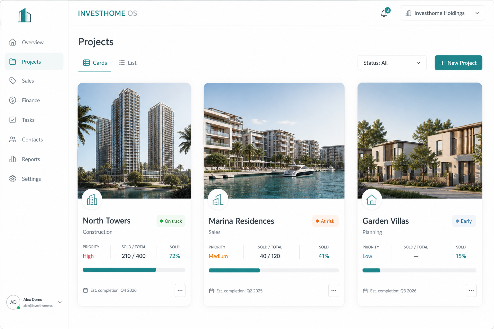

Portfolio as a visual gallery — cover, phase, unit progress, health — not a finance spreadsheet.
Projects look like places. Finance and geo depth stay in detail Advanced — portfolio index stays operational.
Three+ large cover cards communicate commercial health at a glance. Financial projections stay off the card face.
Image-led portfolio cards with progress and health — premium real-estate OS, not ops ERP.

Primary mobile job: finish today’s queue — not recreate the desktop dashboard.
Cards are the index; detail owns tabs for units, timeline, finance.
| Action | Where | Outcome |
|---|---|---|
| Open project | Card | Project detail |
| + New project | Header | Short create (5–8 fields) |
| Filter status/priority | Header | Narrow portfolio |
| Toggle List | Header | Dense compare |
Current project lists read like admin tables. Cover cards make the portfolio scannable for sales and leadership without training.
Visual package only. No routes, components, or APIs changed. Approve or request changes before any implementation.